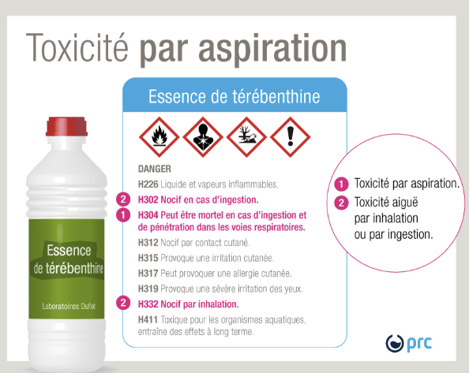
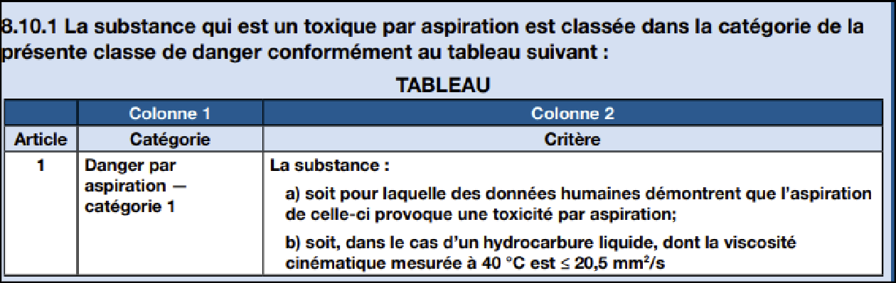
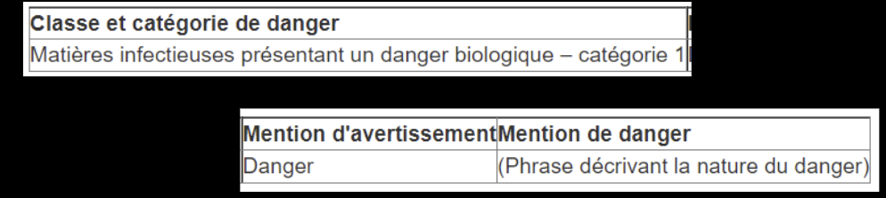
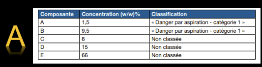
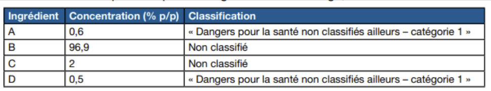
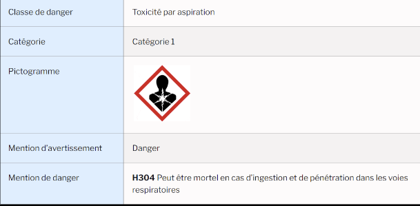

Aspiration et dangers biologiques
Trois classes spécifiques du SIMDUT 2015 : le danger par aspiration (pénétration de liquides dans le poumon), les matières infectieuses présentant un danger biologique (agents pathogènes, groupes de risque 2-4) et les dangers pour la santé non classifiés ailleurs (DNAC). En mine : risque d'aspiration au siphonnage de diesel ou d'huile hydraulique ; biorisque limité (camps en milieu humide, faune sauvage, sites éloignés des soins).
Table des matières
- Danger par aspiration
- Matières infectieuses présentant un danger biologique
- Dangers non autrement classifiés (DNAC)
- Application terrain
- Ressources
Danger par aspiration
Définition
Conséquences graves pour la santé liées à
- L'entrée directe de substances liquides dans les voies respiratoires depuis la bouche ou le nez, ou
- Indirectement par régurgitation après ingestion accidentelle.
{kind=link}

Toucher l'image pour l'agrandirL'aspiration commence avec l'inspiration : la substance se loge dans la gorge puis descend.
Effets
Effet toxique aigu (exposition unique)
| Effet | Mécanisme |
|---|---|
| Obstruction mécanique | Surtout avec régurgitation du contenu gastrique |
| Pneumonie chimique | Inflammation du parenchyme pulmonaire |
| Lésions pulmonaires | Destruction des cellules endothéliales alvéolaires et capillaires |
{kind=link}

Toucher l'image pour l'agrandirCatégorie SIMDUT
Catégorie 1 : viscosité cinématique faible (≤ 20,5 mm²/s à 40 °C). Pictogramme = Danger pour la santé. Mention de danger : H304 « Peut être mortel en cas d'ingestion et de pénétration dans les voies respiratoires ».
{kind=link}

Toucher l'image pour l'agrandirMélanges
{kind=link}

Toucher l'image pour l'agrandir{kind=link}

Toucher l'image pour l'agrandirUn mélange est classé cat. 1 si
- Il contient ≥ 10 % cumulés d'ingrédients cat. 1 individuellement à ≥ 1 %, et
- Viscosité cinématique mesurée à 40 °C ≤ 20,5 mm²/s, ou
- Il se sépare en couches, dont une couche répond aux mêmes critères.
Produits typiques
- Hydrocarbures liquides : essence, kérosène, naphta, white spirit, mazout, diesel.
- Huiles minérales légères, certains solvants.
- Produits domestiques type allume-feu liquide.
{kind=link}

Toucher l'image pour l'agrandirBien que la voie principale d'exposition au travail soit l'inhalation, le danger par aspiration doit être considéré pour les accidents (siphonnage de carburant, vomissements après ingestion accidentelle).
Matières infectieuses présentant un danger biologique
Définition
Microorganismes, acides nucléiques ou protéines qui provoquent une infection, avec ou sans toxicité, chez l'humain ou l'animal. Inclut bactéries, virus, champignons, parasites, prions.
Critères de classement (groupes de risque)
| Critère | Description |
|---|---|
| Pathogénicité | Capacité de causer la maladie |
| Virulence | Gravité de la maladie |
| Dose infectieuse | Quantité minimale pour infection |
| Mode de transmission | Contact, gouttelettes, Aérosols, vecteur |
| Voie d'infection | Inhalation, ingestion, percutanée |
| Spectre d'hôtes | Humains, animaux, plantes |
| Mesures de prévention / traitement | Vaccins, antibiotiques |
| Survie dans l'environnement | Stabilité hors hôte |
Groupes de risque (Loi sur les agents pathogènes humains et les toxines)
| Groupe | Risque individu | Risque public | Exemples |
|---|---|---|---|
| 1 | Faible | Faible | Microorganismes non pathogènes (E. coli K12) |
| 2 | Modéré | Faible | Hépatite A/B/C, Bordetella (coqueluche), salmonella, influenza saisonnier |
| 3 | Élevé | Faible | VIH, Mycobacterium tuberculosis, hantavirus, SARS-CoV-2 (selon contexte) |
| 4 | Élevé | Élevé | Ebola, Marburg, variole, Lassa |
SIMDUT : pictogramme « Matières infectieuses présentant un danger biologique » pour les groupes 2, 3, 4. Catégorie 1 (SIMDUT) seulement.
Contextes de travail
- Santé (hôpital, laboratoire, dentistes, vétérinaires).
- Agriculture, agroalimentaire.
- Gestion des déchets, assainissement.
- Recherche.
- Voyageurs / aide humanitaire.
Voir Bioaérosols pour la composante hygiène.
Dangers non autrement classifiés (DNAC)
Définition
Substances ou mélanges qui présentent un danger pour la santé non couvert par les autres classes (effet sévère, mort, atteinte permanente après exposition unique ou répétée).
Exemples potentiels : substances avec effets toxiques particuliers non capturés par les critères des autres classes (par exemple certains effets paradoxaux, mécanismes émergents).
Pictogramme attribué : selon la sévérité (souvent point d'exclamation ou danger pour la santé).
Application terrain
Risque par aspiration
| Situation | Risque |
|---|---|
| Siphonnage manuel de diesel ou d'essence | Aspiration buccale puis pulmonaire (pneumonie chimique) |
| Manipulation d'huile hydraulique avec contact bouche | Aspiration possible |
| Vomissement après ingestion accidentelle de solvant | Aspiration secondaire grave |
| Transvasement de carburants sans contenant étiqueté | Risque de confusion et ingestion |
Mesures : pompes manuelles pour transvasement, interdiction stricte du siphonnage buccal, contenants dédiés et étiquetés (jamais de bouteille de boisson), formation des nouveaux travailleurs sur la classe H304.
Risque biologique
En mine, le biorisque est modéré mais réel
| Source | Agent typique | Mesure |
|---|---|---|
| Camps en milieu humide (douches, ventilation) | Legionella | Programme eau chaude, désinfection (voir Bioaérosols) |
| Faune sauvage (rongeurs, oiseaux) | Hantavirus (souris sylvestres) | Procédures de nettoyage des bâtiments fermés saisonnièrement |
| Eau de procédé, bassins de rétention | Coliformes | Suivi qualité de l'eau |
| Sites éloignés, climat froid | Hypothermie aggravant infections | Plan d'urgence médicale, évacuation héliportée |
| Voyageurs internationaux FIFO | Vaccins à jour, paludisme selon destination | Médecine du voyage |
| Trousses de premiers soins, salle médicale | Exposition au sang (aiguilles, plaies) | Protocole AES, secouristes formés |
DNAC
En mine, peu fréquent ; appliqué ponctuellement à certains réactifs spéciaux ou produits émergents (par ex. certaines nanoparticules manufacturées sans VLE).
Ressources
| Document | Type | Source |
|---|---|---|
| Lignes directrices canadiennes en biosécurité | Référentiel | ASPC |
| Loi sur les agents pathogènes humains et les toxines | Loi | Lois fédérales |
| Protocole hantavirus pour bâtiments saisonniers | Procédure | INSPQ, à adapter |
| Plan Legionella du camp | Programme | À développer en interne |
Articles wiki connexes
Pages qui pointent ici (8)
- 🎯 Démarrage rapide, conseiller SST Hygiène industrielle
- 🏠 Wiki Hygiène industrielle, mines Hygiène industrielle
- Agresseurs biologiques Hygiène industrielle
- Agresseurs chimiques Hygiène industrielle
- Bioaérosols Hygiène industrielle
- SIMDUT et classes de danger Hygiène industrielle
- Solvants organiques Hygiène industrielle
- Substances dangereuses Hygiène industrielle